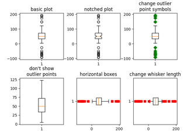
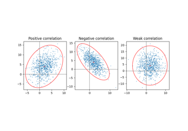
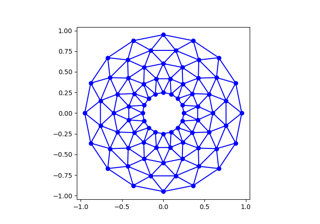
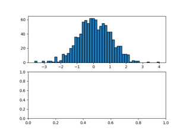
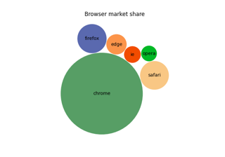
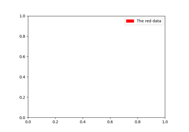
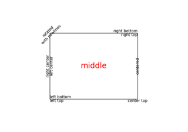

matplotlib.axes.Axes.add_patch#
Examples using matplotlib.axes.Axes.add_patch#


Controlling view limits using margins and sticky_edges
Controlling view limits using margins and sticky_edges

Boxplots

Plot a confidence ellipse of a two-dimensional dataset
Plot a confidence ellipse of a two-dimensional dataset



Trifinder Event Demo



Building histograms using Rectangles and PolyCollections
Building histograms using Rectangles and PolyCollections

Packed-bubble chart



Legend guide


Text properties and layout